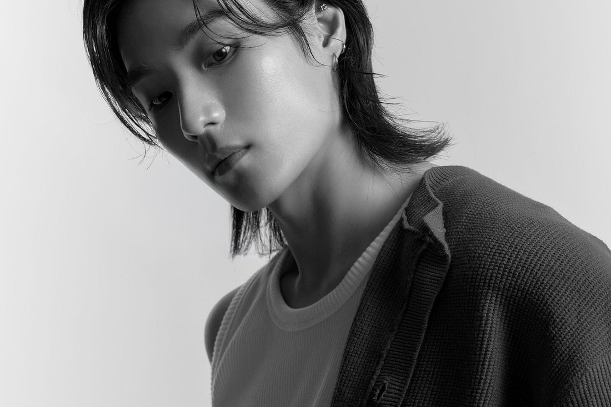
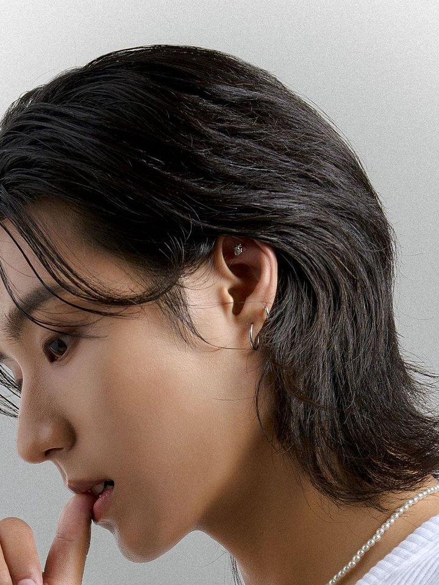

BluJin은 R&B의 부드러운 감성과 팝의 중독성 있는 멜로디, 일렉트로닉 사운드의 청량한 에너지를 넘나드는 보컬리스트입니다. 2026년 싱글 'Dream Paradise'를 발표했고, 콘서트 무대와 위문공연 등 다양한 자리에서 노래해 왔습니다.


주요 무대
- 2026 싱글 'Dream Paradise' 발매
- 2025 어썸기타 공연
- 2024 김범수 전국투어 'The Original' 콘서트 무대
- 2024 유튜브 허석(Huh Suk) 채널 '노래 잘함 대회' 출연
- 2022 육군 50사단 장병 대표 위문공연
이런 자리에 잘 맞아요
- 송년회·기업 행사
- 콘서트·공연 오프닝
- 위문공연·파티
공연 구성
- MR 반주 또는 밴드 편성(협의)
- 행사 성격에 맞춘 셋리스트 구성
섭외 진행 순서
- 문의: 날짜·장소·공연 시간 확인
- 일정 확인과 견적
- 계약: 주식회사 위메이커 명의
- 셋리스트와 음향 사전 협의
- 행사 당일 리허설과 공연
자주 묻는 질문
섭외 비용은 어떻게 정해지나요?
행사 날짜와 장소, 공연 시간, 편성에 따라 달라집니다. 날짜와 장소를 알려 주시면 일정을 확인해 견적을 보내 드립니다.
음향 장비도 준비해 주나요?
필요하면 메이커팀이 무대와 음향까지 함께 준비합니다. 행사장 음향을 쓰는 경우에는 공연 전에 장비 사양을 확인합니다.
원하는 곡을 넣을 수 있나요?
행사 성격에 맞춰 셋리스트를 제안하고, 원하시는 곡이 있으면 미리 협의해 반영합니다.